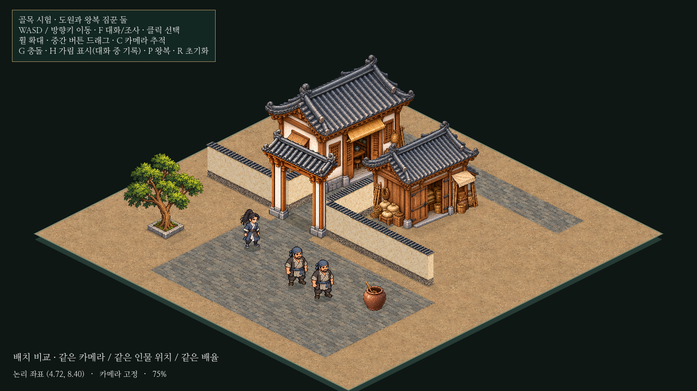
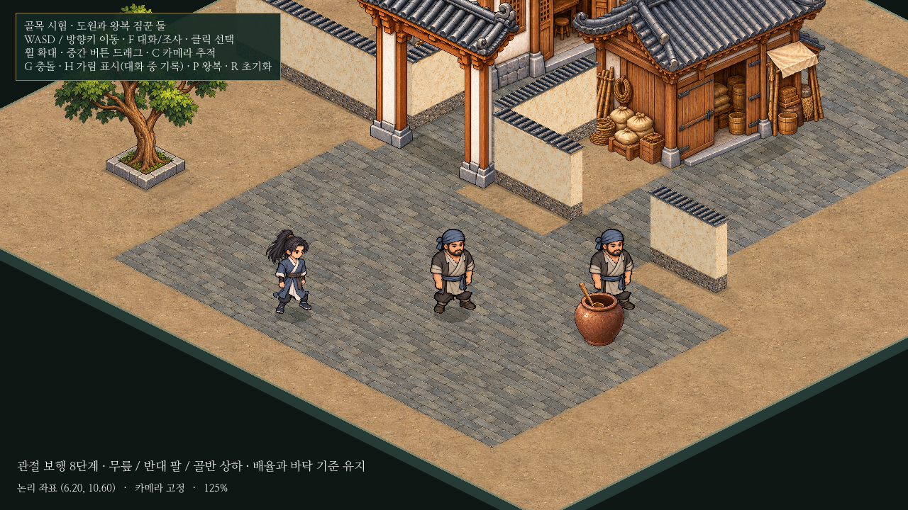

골목 시험 · 보행과 건물 진입 동선
원본 그림의 관절 보행과 창고 앞 하역 마당을 보충했습니다. 조작 인물과 자동 NPC의 속도는 4.8논리 타일/초로 유지했습니다. 실내가 없는 건물도 문 앞 공간과 공용 길에서의 접근을 갖추도록 앞으로의 배치 규칙에 기록했습니다.
같은 플레이 카메라의 배치 비교
1280×720 · 배율75% · 카메라(0,290) · 같은 인물 위치. 창고 그림 자체는 그대로이며 오른쪽 앞 담장을 열고 연결 마당을 만들었습니다. 이미지를 누르면 원본 크기로 확인할 수 있습니다.

변경 전: 창고 문 쪽 마당과 앞길이 담장으로 단절
 변경 후: 하역 마당과 출입구를 통해 창고 문에 접근
변경 후: 하역 마당과 출입구를 통해 창고 문에 접근
실제 이동과 보행 영상
11.8초. 앞부분은 실제 입력으로 공용 길→창고 앞을 이동합니다. 뒤쪽은 관절 동작을 살펴보는 느린 제자리 자세 재생입니다. 게임의 실제 이동 속도를 낮춘 것은 아닙니다. 영상 다운로드
문과 접근 동선
한 주기의8대표 자세
같은125% 카메라 · 같은 바닥 깊이. 새8장 원화가 아니라 기존 앞/뒤 그림을 관절 메시로 움직인 실제 렌더 화면입니다. 발 교차, 무릎 굽힘, 반대 팔과 몸통의 약3~4픽셀 상하 이동을 비교합니다. 전체 그림/물리 기준점의 배율은 고정입니다.
주기 1/8
주기 2/8
주기 3/8

주기 4/8
주기 5/8
주기 6/8
주기 7/8
주기 8/8
뒤쪽과 정지 자세
직접 확인
Godot의 res://prototypes/isometric/main.tscn을 열고 F6. WASD/방향키 이동, F 대화, G 충돌/접근 경로, P 왕복 정지/재개. 기존 본게임은 F5입니다.
검증 결과/한계 · 앞으로의 건물 배치 규칙